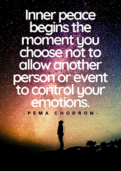

"Nothing is impossible. The word itself says "I'm possible!✨" -Audrey Hepburn- |
"Life is not a problem to be solved, but a reality to be experienced.✨" -Soren Kierkegaard- |
"Life is like riding a bicycle. To keep your balance, you must keep moving.✨" -Albert Einstein- |
"You will face many defeats in life, but never let yourself be defeated.✨" -Maya Angelou- |
"Let us be grateful to the people who make us happy; they are the charming gardeners who make our souls blossom.✨" -Marcel Proust- |
"To the world you may be just one person, but to one person you may be the world.✨" -Brandi Snyder- |
"What I like about photographs is that they capture a moment that’s gone forever, impossible to reproduce.✨" -Karl Lagerfeld- |
"The more often you share what you've learned, the stronger that information will become in your memory✨" -Steve Brunkhorst- |
|  |
|